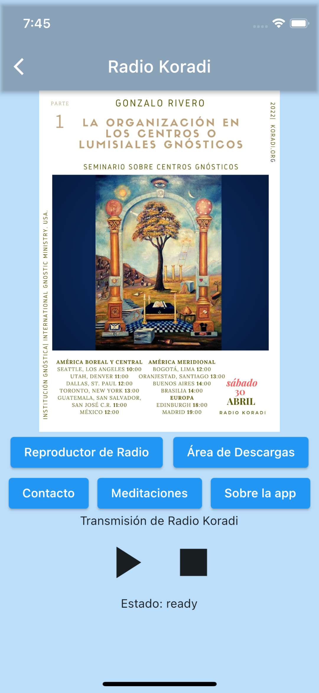

Mobile Application Development
Eager to learn more about software development, and disappointed by the course offerings at UMT, I was fortunate to work with Patricia Duce in order to complete an Android Developer training course and use the material contained therein to develop a course taught for the first time at UMT in Fall, 2022.
What I've Learned: Application Fundamentals
Android development has been an excellent way to get hands on practice writing clean code and work with software architecture patterns commonly found in industry applications, especially model-view-viewmodel ( MVMM) which is endorsed as a best practice when building Android apps.
According to Android:
Another important principle is that you should drive your UI from data models, preferably persistent models. Data models represent the data of an app. They're independent of the UI elements and other components in your app. This means that they are not tied to the UI and app component lifecycle, but will still be destroyed when the OS decides to remove the app's process from memory.
This effectively separates the application into two layers: a user-interface (UI) layer, and a data layer. This concept is just one example of various design principles that I learned while exploring application development.
While Android applications have historically been written in Java, in May 2019 Google announced that the officially supported language for Android development would be Kotlin. Kotlin has much in common with Java but its syntax has been changed to support type inference and eliminate the terminating semicolons, among many other features such as inline lambda functions, null safety, range expressions, and coroutines, all of which were explored in depth in the training course.
This course also emphasised the importance of testing application code, and each module contained an activity related to writing effective unit and functional tests. After teaching foundational concepts such as user interface (UI) management using layout resource files, click listeners, etc. the course demonstrated how to implement a Recycler View. Recycler Views are the component inside of Android applications that allow for an infinitely scrollable list. Think of any 'feed' you have encountered such as news feed on LinkedIn or Twitter, and you have the idea.. Recycler Views have been designed to provide a user-friendly experience by scrolling smoothly and not freezing or jerking as fresh list items are loaded into the list.
THe following is a code snippet from my application ListMaker which demonstrates the use of a Recycler View. Its individual components will be explained below:
class MainAdapter(
private val onItemClick: (MainItem) -> Unit, private val onItemLongClick: (MainItem) -> Boolean
) : ListAdapter(DiffCallback) {
companion object DiffCallback : DiffUtil.ItemCallback() {
override fun areItemsTheSame(oldItem: MainItem, newItem: MainItem): Boolean {
return oldItem.itemName == newItem.itemName
}
override fun areContentsTheSame(oldItem: MainItem, newItem: MainItem): Boolean {
return oldItem == newItem
}
}
class ViewHolder(private var binding: ListItemBinding) : RecyclerView.ViewHolder(binding.root) {
fun bind(item: MainItem) {
binding.listItemText.text = item.itemName.toString()
}
}
override fun onCreateViewHolder(parent: ViewGroup, viewType: Int): ViewHolder {
val viewHolder = ViewHolder(
ListItemBinding.inflate(
LayoutInflater.from(parent.context),
parent,
false
)
)
viewHolder.itemView.setOnClickListener {
val position = viewHolder.adapterPosition
onItemClick(getItem(position))
}
viewHolder.itemView.setOnLongClickListener {
val position = viewHolder.adapterPosition
onItemLongClick(getItem(position))
}
return viewHolder
}
override fun onBindViewHolder(holder: ViewHolder, position: Int) {
holder.bind(getItem(position))
}
}
- The MainAdapter class constructor expects as arguments two click listeners that determine what occurs if a list item is clicked or long-clicked respectively and extends the ListAdapter class which expects a DifCallback object as an argument.
- ListAdapter is a base class used for presenting list data in a Recycler View.
- DiffCallback is a class that contains methods for computing the difference between two lists and is useful to detect when only one or a few list elements have changed, and update only those elements as opposed to the entire list. Here DiffCallback is implemented as a companion object.
- A companion object is an example of the Singleton design pattern and also resemble static objects in Java in the sense that they belong to a specific class but not a given instance of that class.
-
The
ViewHolderclass accepts aListItemBindingobject as an argument. AListItemhas been defined in a separate xml file and in this case contains only instructions on how to display a text field. TheViewHolderclass is responsible for using this binding object to set the text field of a given list item to the appropriate item's name in thebindfunction. -
The
onCreateViewHolderfunction returns aViewHolderand is responsible for inflating theListItemview. -
Additionally two click listeners are set within
onCreateViewHolder. Additionally listeners can be set here as well that handle the application's response to specific gestures or other events. -
Lastly, the
onBindViewHolderfunction is responsible for performing the work defined inonCreateViewHolderand therefore also any work defined in thebindfunction in theViewHolderconstructor. In this case this entails setting aListItem's text field to the appropriate item's name and setting two click listeners.
What I've Learned: Application Navigation
Android provides a
Navigation
Component
which is intended to simply the process of navigating between views within an application. In Android,
any screen displayed to a user is a view that has been defined in a layout.xml file. These
views can
be either activities or fragments. Simple applications can usually be contained within a single activity
and make use of fragments to display different views. Utilizing the Navigation Component in such a
situation is described below. The code for these examples has been taken from my solution to a
project
in the third module of the Android
Basics in Kotlin
course:
-
Android applications have their programmatic entry point located in a
MainActivityclass (this can be modified in theAndroidManifest.xmlfile, but changing this doesn't appear to be a common practice). WithinMainActivitywe can initialize aNavHostFragmentwhich is a fragment that will be used to display the views contained within our app. This fragment is owned by theNavHost, which contains the conext for naviagting using aNavController. We also initialize thisNavControllerwithinMainActivity. These steps are demonstrated in the code below:class MainActivity : AppCompatActivity() { private lateinit var navController: NavController override fun onCreate(savedInstanceState: Bundle?) { super.onCreate(savedInstanceState) setContentView(R.layout.activity_main) val navHostFragment = supportFragmentManager .findFragmentById(R.id.nav_host_fragment) as NavHostFragment navController = navHostFragment.navController setupActionBarWithNavController(navController) } } -
Next, a
navGraph.xmlis necessary in order to define the fragments known to theNavHostand define both the directionality between fragments and their corresponding layout files: -
Now click listeners must be incorporated into each fragment that will trigger the appropriate
transition from one view to another:
class StartOrderFragment : Fragment() { private var _binding: FragmentStartOrderBinding? = null private val binding get() = _binding!! override fun onCreateView( inflater: LayoutInflater, container: ViewGroup?, savedInstanceState: Bundle? ): View? { _binding = FragmentStartOrderBinding.inflate(inflater, container, false) val root: View = binding.root // Navigate to entree menu binding.startOrderBtn.setOnClickListener { // Setting the click listener to call navigation action findNavController().navigate(R.id.action_startOrderFragment_to_entreeMenuFragment) } return root } }
These steps demonstrate the implementation of code directly related to the Navigation Component, but it
is
worth noting that additional steps are necessary such as placing a FragmentContainerView
inside the MainActivity layout file as well as defining the layout files for each
individual fragment. (This app also makes use of a ViewModel, but this will be discussed
in another section). Once all this has been finished, we can navigate through the application as
demonstrated below:


Clcicking the back arrow located in the AppBar at the top of the screen will result in a navigation action that displays the previosuly shown fragment.
ListMaker
ListMaker is a native Android app useful for creating nested lists of items worth remembering. This app implements the Android Jetpack Room Library in order to persistently store user created lists within a SQL database on the user's device. This app also demonstrates the use of a ViewModel, LiveData, and the Android Navigation Component.

Koradi App
The Koradi App is A Flutter project allowing users to interact with Koradi Radio. This application has been localized for six different languages and allows users to connect to a continuous audio stream originating from the Koradi Radio server as well as access recordings of past activities and submit listener questions via their web form. It implements a background audio service in order to continuously play media.
